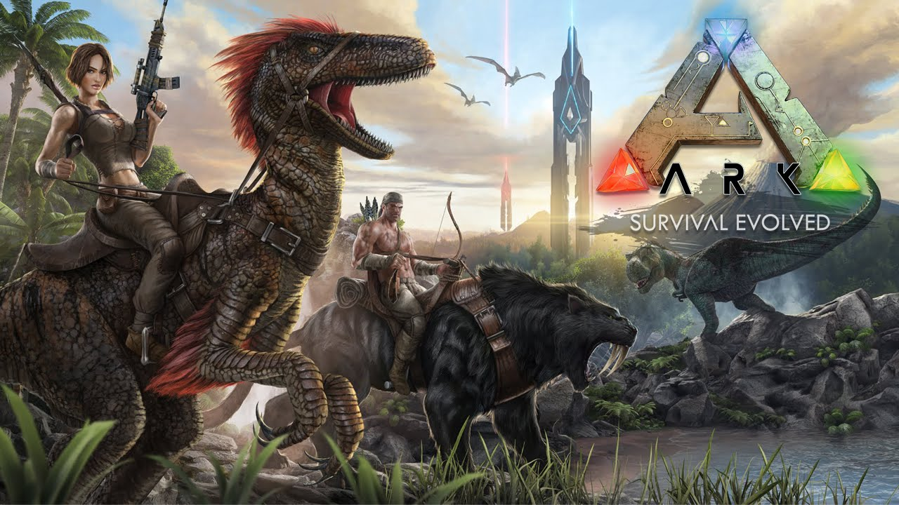
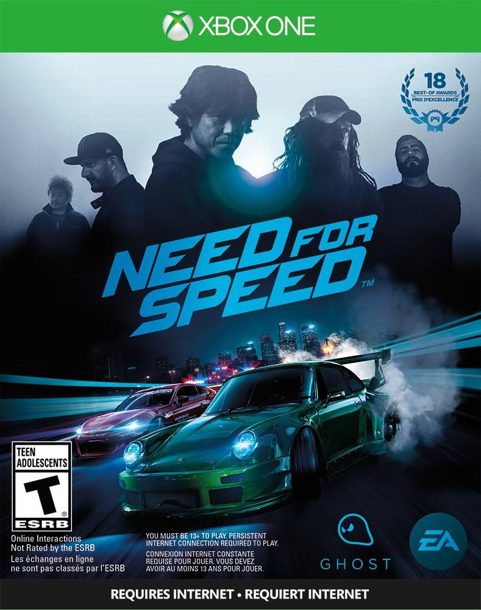

Jogos triple A:
Call of Duty

Call of Duty é uma série de jogos de tiro em primeira pessoa que começou em 2003, inicialmente ambientada na Segunda Guerra Mundial. Com o tempo, a franquia evoluiu para cenários modernos, futuristas e até de guerra fria, focando em campanhas militares e combate multijogador conhecida por sua jogabilidade frenética, gráficos realistas e narrativa cinematográfica.
ARK: Survival Evolved
ARK: Survival Evolved é um jogo de sobrevivência em mundo aberto onde os jogadores devem caçar, coletar recursos, construir abrigos e domesticar dinossauros em uma ilha repleta de criaturas pré-históricas, além de enfrentar desafios ambientais, os jogadores também lidam com outros players e tribos hostis. O jogo combina exploração, combate e estratégias de sobrevivência em um ambiente vasto e perigoso.
Need for speed
Need for Speed é uma série de jogos de corrida onde os jogadores participam de competições de alta velocidade, frequentemente em ambientes urbanos, com carros exóticos e modificados. A franquia é conhecida por suas corridas ilegais, perseguições policiais intensas e customização de veículos. Com foco na adrenalina e na ação, a série se tornou um ícone do gênero de corrida arcade.
God of War: Ragnarok

God of War Ragnarök é uma continuação épica da jornada de Kratos e seu filho Atreus na mitologia nórdica, explorando temas de destino e relações familiares. O jogo mistura combate visceral com quebra-cabeças e exploração, enquanto os protagonistas enfrentam deuses e criaturas em um cenário que prenuncia o fim do mundo, o Ragnarök. A narrativa profunda e os visuais impressionantes consolidam o jogo como um marco no gênero de ação e aventura.
Horizon Forbidden West

Horizon Forbidden West é um jogo de ação e aventura em mundo aberto que segue Aloy em sua jornada para salvar a Terra de uma nova ameaça tecnológica. Ambientado em um futuro pós-apocalíptico, o jogo combina exploração de cenários deslumbrantes, combate contra máquinas gigantes e uma história profunda sobre sobrevivência e descoberta. A jogabilidade aprimorada e os gráficos impressionantes destacam a sequência como uma evolução da franquia.
Red Dead Redemption 2

Red Dead Redemption 2 é um jogo de ação em mundo aberto ambientado no Velho Oeste, onde o jogador controla Arthur Morgan, um fora da lei em um mundo em mudança no final do século XIX. Com uma narrativa rica e emocional, o jogo explora temas de lealdade, sobrevivência e moralidade, enquanto oferece uma jogabilidade imersiva com caçadas, tiroteios e exploração detalhada. A atenção aos detalhes e o realismo fazem dele um dos jogos mais aclamados de sua geração.